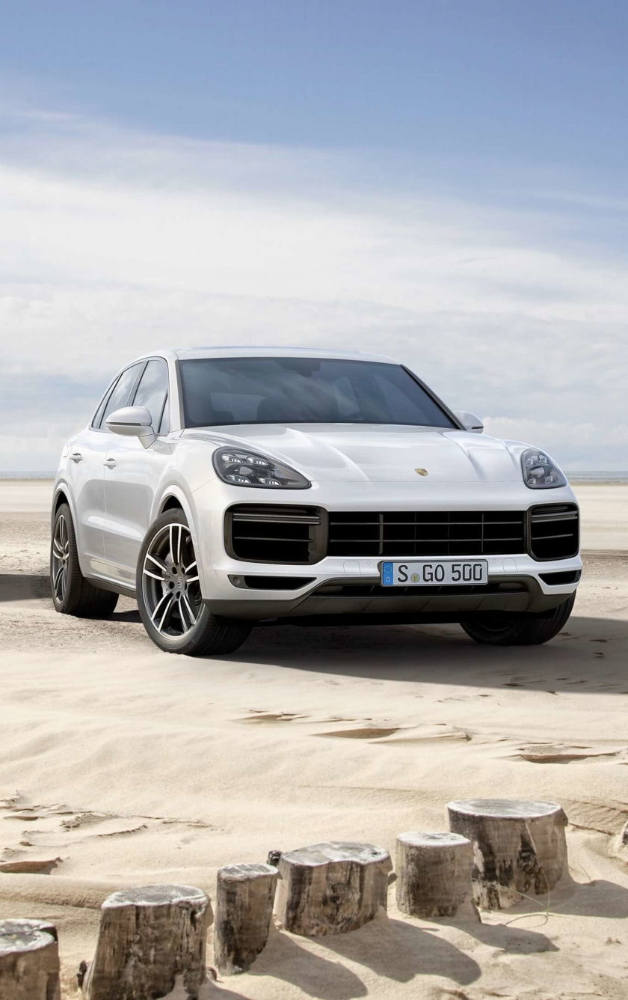

Dernière Collection
arrow_back_ios
arrow_forward_ios

Porche 911 GT3
body kit carbon

Porche CAYENNE
Présentation
Porche 911 3.2
body kit carbon
Porche 988 SPYDER
showcaseLAISSER VOUS TENTER PAR UN UNIVERS DE VITESSE PUR
|